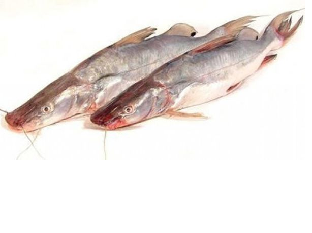
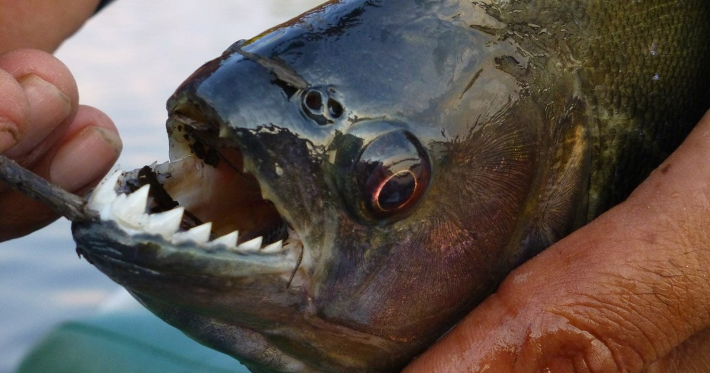

Warehou Fish
Warehou are great to eat with a distinctive taste somewhere between trevally and
moki with the meat being a little more fibrous and with a pale white colour. Because the fish are fat,
yield thick fillets and have a medium to low oil content, they can be difficult to cook
perfectly.

Sperata Seenghala Fish
Sperata seenghala, the Giant river-catfish, is a species of bagrid catfish.
It is known locally as Guizza, Guizza ayer, Auri, Ari, Pogal, Singhara
and Seenghala, among other names.It is found in southern Asia in the
countries of Afghanistan, Pakistan, India, Nepal and Bangladesh
with reports of occurrence in Myanmar Thailand and China.

Red Cod Fish
Cod is the common name for the demersal fish genus Gadus, belonging to the family Gadidae.
Cod is also used as part of the common name for a number of other fish species
and one species that belongs to genus Gadus is commonly not called cod

Pirana Fish
The Piranha Fish (also known as the 'caribe' in Venezuela) is a ferocious, schooling, fresh-water fish. There are many species of piranha fish. Piranha Fish belong to the genera 'Pygocentrus' and 'Serrasalmus'. Although Piranhas are omnivorous, they are known for their sharp teeth and an aggressive appetite for meat

Kahwai Fish
Arripis trutta, known as kahawai in New Zealand and as the Australian salmon in Australia, is one of four species of marine fish within the genus Arripis, found in cooler waters around the south eastern and south western coasts of Australia and the New Zealand coastline.